Sample project
Update: We got some local media attention and went on TV
The world’s oldest profession is — perhaps ironically — the least quantitatively understood. Partly due to the culturally objectionable nature of the industry (Buddhists comprise of more than 90% of Thailand’s population),
most studies focus on its qualitative, socio-economic impact. Even the number of sex workers in the country varies greatly among studies from as few as 70,000 to as many as 2 million prostitutes. Buyers and sellers seem to be operating
organically without any formal market intelligence, until now at least. As with most industry, prostitution has found its way to the Internet. By web scraping data from an undisclosed online prostitution house, we created a dataset of 693
call girls from Bangkok including their price, age, physical characteristics, service repertoire, location and contacts. Here’s what we learn.
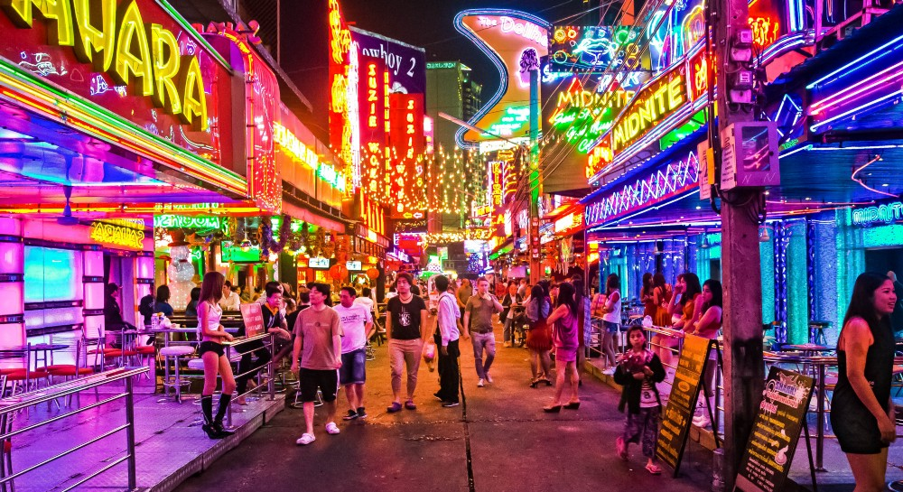
Bangkok sex workers’ areas of operation can be roughly divided into 6 (k-mean) clusters; namely Kaset-Ratchayothin, Ladprao-Ramkamhaeng, Donmuang-Rangsit, Thonburi, Sukhumvit, and Downtown. Some do walk multiple streets and have a larger coverage,
but they usually stay in one cluster. The map below shows the pick-up spots within each area. For local customers, Kaset-Ratchayothin (163 spots) and Ladprao-Ramkamhaeng (507 spots) are the household names for prostitution as shown by the density
of pick-up spots. Likewise for foreigners, Downtown (213 spots) and Sukhumvit (166 spots) have the honor. Donmuang-Rangsit (121 spots) and Thonburi (82 spots) are relatively less populated, although for the former, university campuses in the area
might be driving the supply upward.
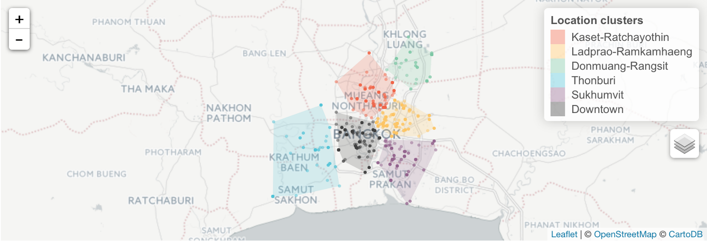
The Three Numbers That Matter
In the spirit of full disclosure, this quantitative analysis will inevitably be without one of the most important factors that describe a prostitute–beauty. The most reliable way to quantify such a subjective matter as beauty is to have a number
of people rate all prostitutes using the pictures they have posted (only 281 out of 693 have pictures posted, by the way) and average them. We do not have the manpower to do so thus we rely on a different approach: their measurements.
A typical sex worker in Bangkok measures 35–27–36. The stature seems to hold across location clusters; that is, given that prostitutes are totally honest about their physical appearances. According to science and evolution, the hip-to-waist
or waist-to-hip) ratio is a signifiant determinant of attractiveness. A study cited 1.4 as the optimal ratio. In that regards, Ladprao-Ramkamhaeng wins hands down with Kaset-Ratchayothin, Sukhumvit and Downtown all having decent records.
If we would not-so-scientifically apply the same rule of thump to breast-to-waist ratio, Downtown would win the curviness contest. However, if you are willing to lower the bar a little, Kaset-Ratchayothin, Ladprao-Ramkamhaeng and even the
less popular Donmuang-Rangsit would also have quite a number of busty ones.
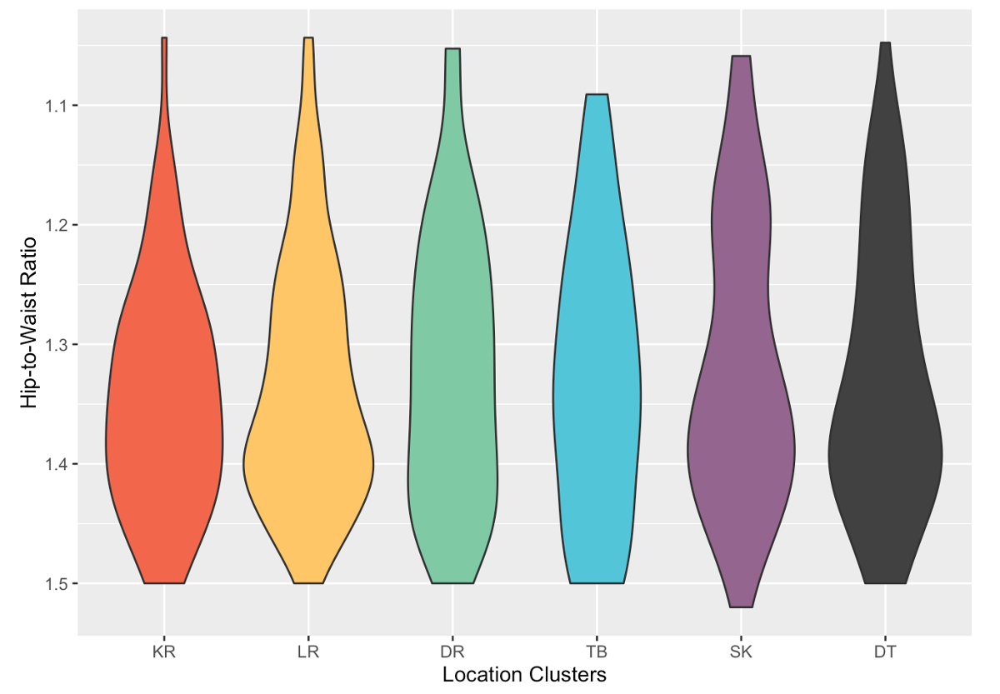
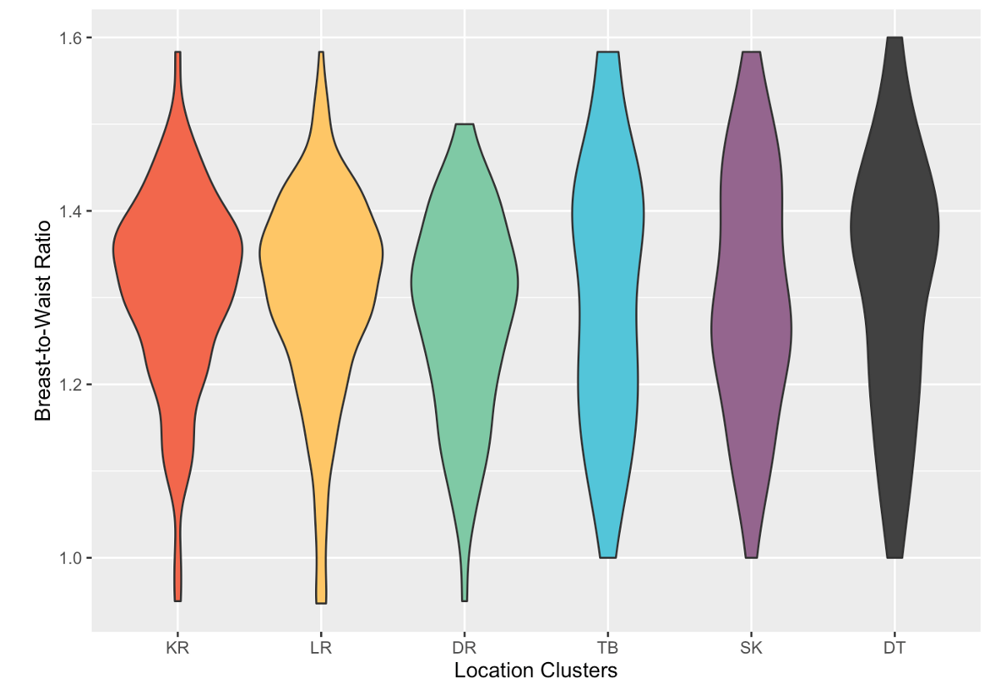
Although the body mass index (BMI) has taken a lot of statistical beatings in terms of its validity in predicting one’s health, it is still indicative of a body type. An average Bangkok prostitute weighs 55 kilograms and stands 163 centimeters tall.
Prostitutes are significantly more underweight and less obese than the general population. About a third is underweight compared to a tenth in the general population and about a tenth is overweight or obese compared to about a third in the general
population. They have approximately the same percentage of population with normal weight, although is it noteworthy that roughly 15% of sex workers in our sample did not specify their weight and height.
Among the location clusters, Donmuang-Rangsit and Thonburi stand out as the relatively more chubby clusters, whereas Downtown appears to be the skinniest. The rest have almost the same composition as the overall prostitute population.
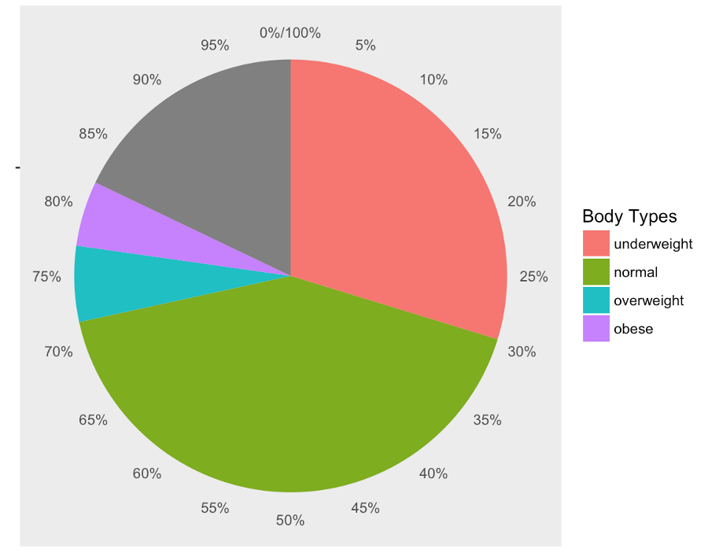
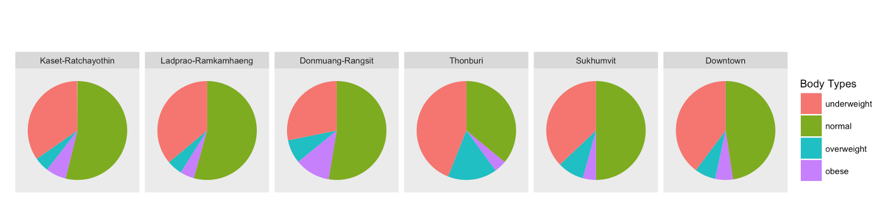
Even though some people age differently than others. We cannot deny that age plays an important role in dictating physical appearances. The median age for Thai prostitutes is 23 years old. The youngest start as early as 18 years old,
the legal age for consensual sex (not that it matters because prostitution is technically illegal in Thailand anyways); the oldest age is 45 years old.
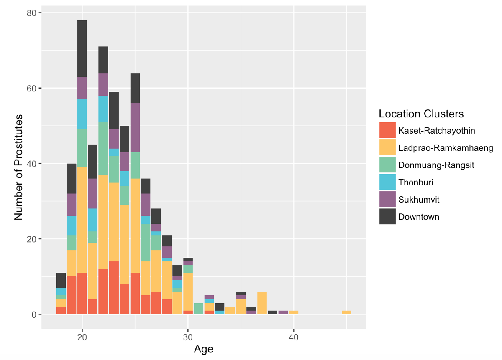
We explore the most popular services provided and unsurprisingly such basic activities as sex, blowjob, woman-on-top, and groping come out on top, whereas more fetish-ish activities like drinking the semen, taking pictures, anal and swinging
stay at the bottom. Despite some minor variations, popularity rankings of services tend to remain the same across location clusters.
When we look at the number of sex workers performing each service, Ladprao-Ramkamhaeng’s dominace as a prostitution hot spot truly shines. For any service, Ladprao-Ramkamhaeng has the largest number of prostitutes performing it.
Downtown comes in close second while Kaset-Ratchayothin and Donmuang-Rangsit trail behind.
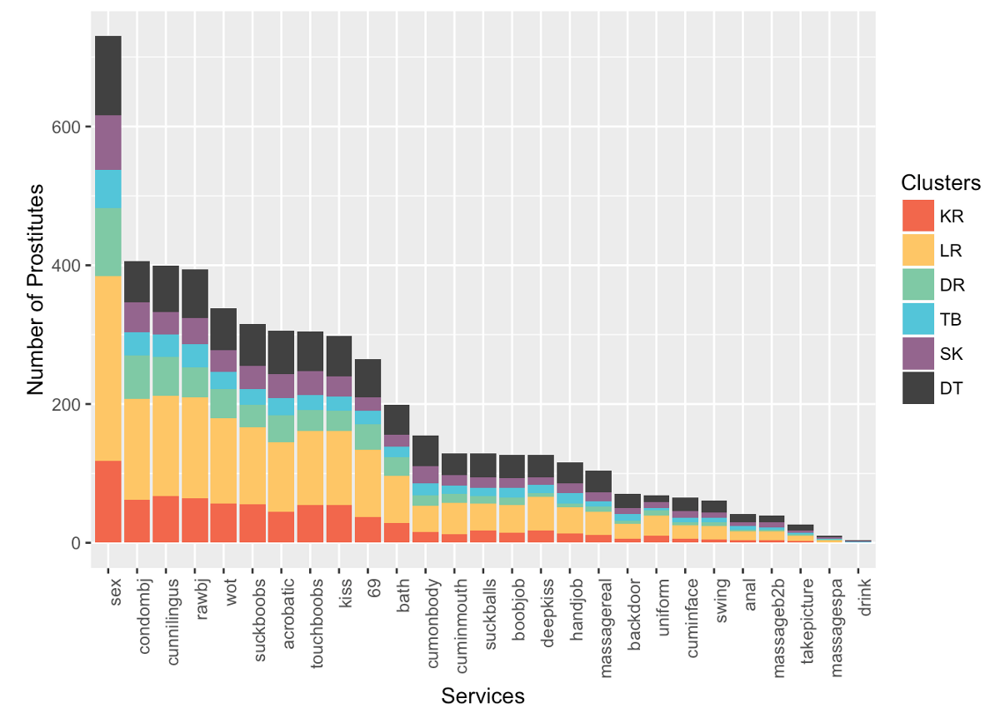
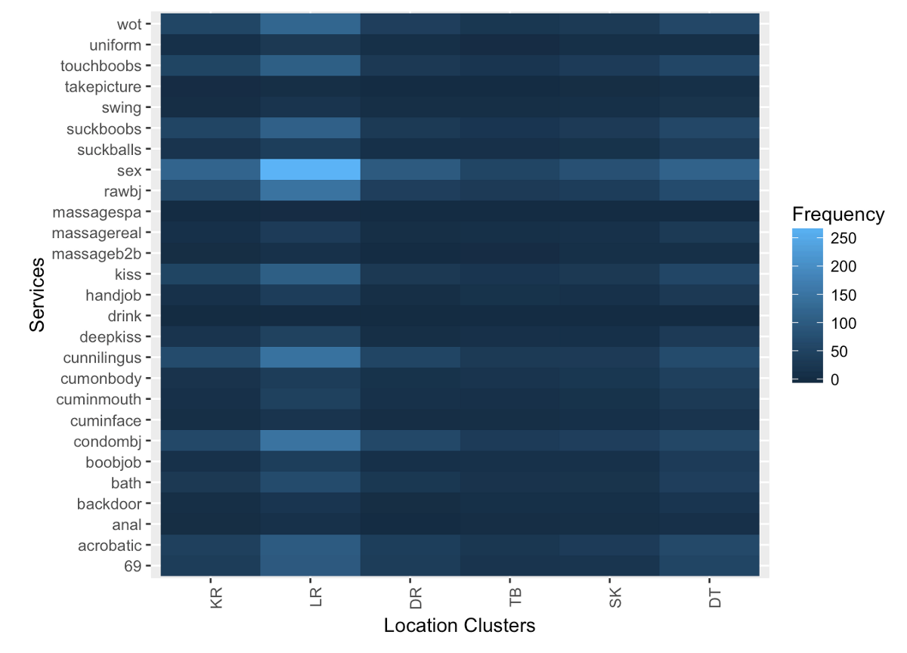
Location Clusters
Bangkok prostitutes of all clusters charge a standard (median) price of around 1,500THB (about 40USD) per deed. Notable exceptions include the suburban Donmuang-Rangsit area whose upper quantile is substantially lower than the rest;
this coincides with the area’s lower average income. On the other hand, the Downtown area has the widest range of prices, possibly to cater to a variety of customers.
Gender Diversity
Another interesting dimension is the price discrimination according to gender. Thailand is one of the world’s most socially, though regrettably not legally, open places to gender diversity. Yet, be it demand-supply equilibrium or blatant homophobia,
gay prostitutes seem to be making a lot than their straight counterparts. Ladyboy sex workers who have undergone sex change operations can charge closer to the female ones (82 cents for a dollar on average); the same cannot be said for
those who have not (60 cents for a dollar on average). Butches are excluded due to small sample size. Straight male also, perhaps more understandably, earn 70 cents on average for each dollar straight female earn.
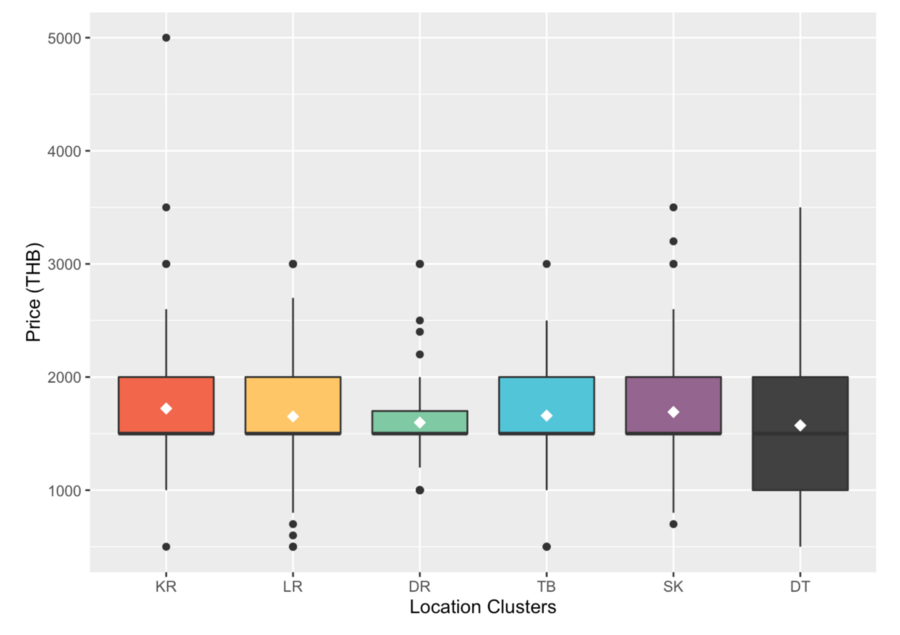
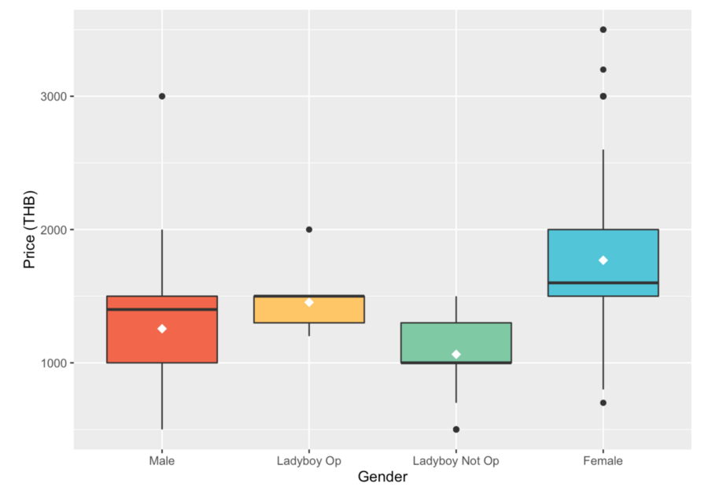
LINE is King
Over 70% of the communication in the Bangkok prostitution industry is done through the instant messaging app LINE. Telephone number accounts for 60% of the contacts provided. And believe it or not, 10% of the prostitutes also list their emails.
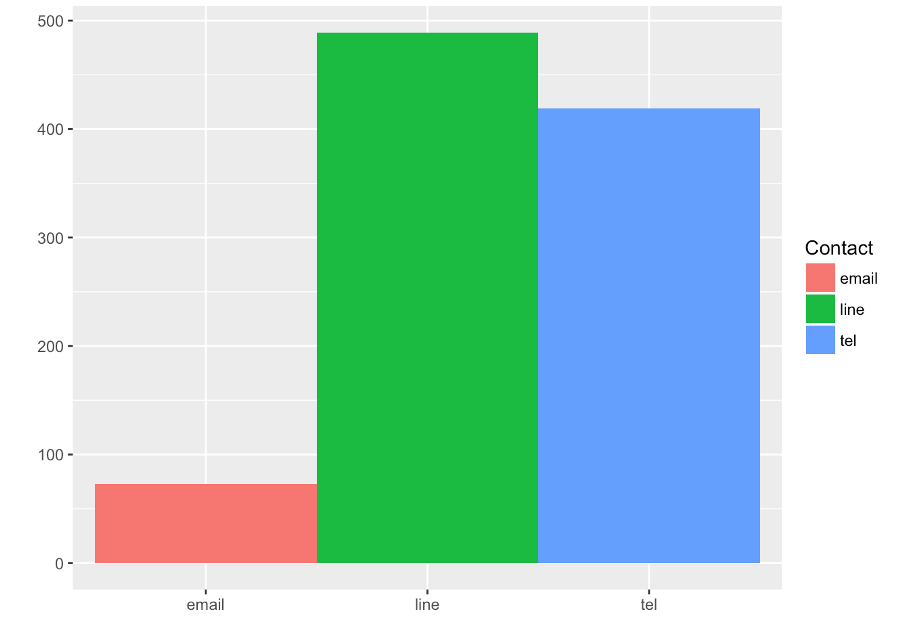
Winner Takes All
Selling your body in Bangkok is a cut-throat business. 50% of prostitutes gets less than 40 views on their profiles per day, and 90% of them gets less than 300 views per day. This means that 10% of the super divas makes up of more than
45% of the total views per day.
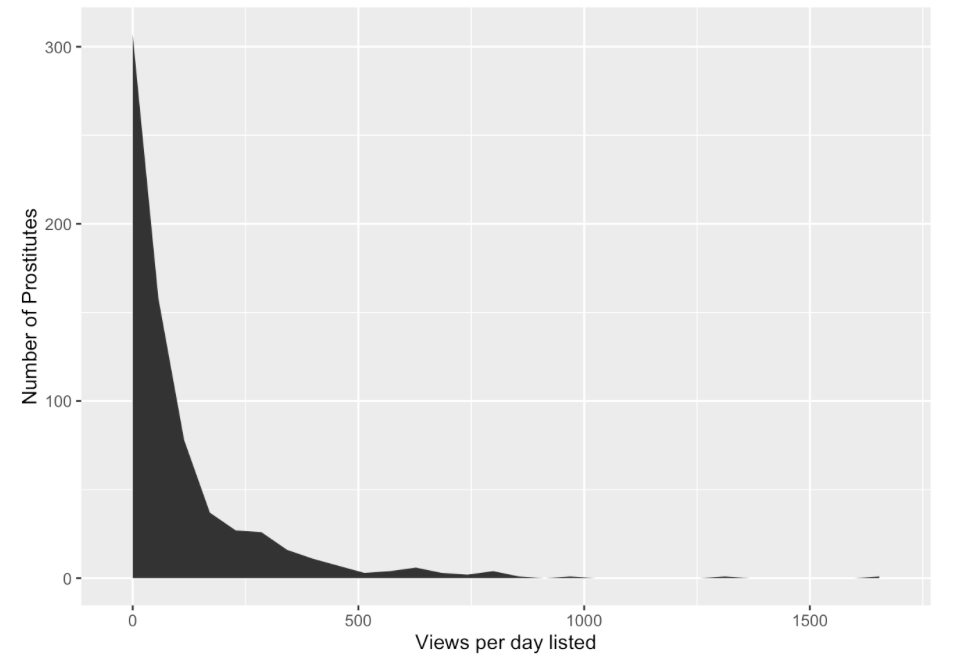
In order to dig deeper into the dynamics of the industry, we performed gradient boosted regression and computed the relative influences of each feature. Since we lack some of the most important features such as beauty, our model
ends up explaining only around 10% of the variations. Nonetheless, it is worth looking at the 20 features with a significant level of relative influences.
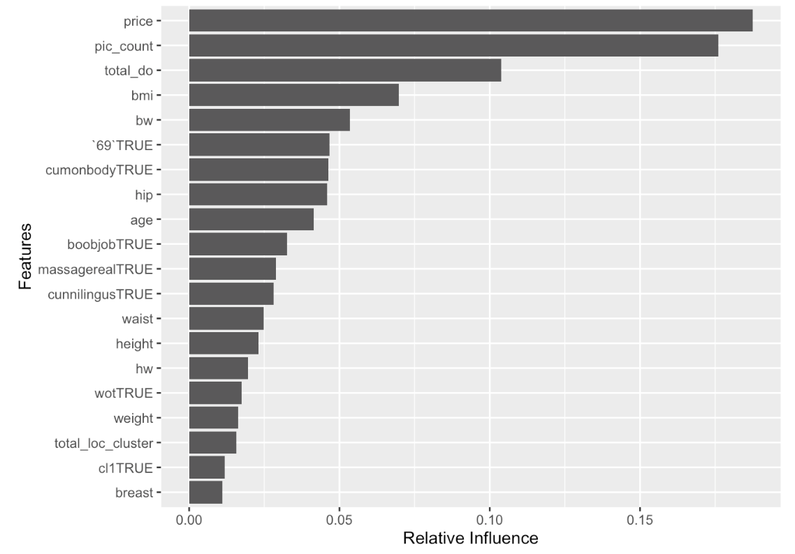
Aside from such obvious determinants as price and pictures, the ideal Bangkok prostitute–the one with the most likely highest views per day–is a young, physically fit and appealing straight female who operates in Kaset-Ratchayothin but also
travels around. The larger her repertoire the better; at least it should include 69, cum on body, boob job, actual Thai massage, cunnilingus and the woman-on-top position. As for the customers, Ladprao-Ramkamhaeng, Downtown and
aset-Ratchayothin are the areas with the most populated, most physically fit and most curvy prostitutes. Ladprao-Ramkamhaeng offers the highest variety. Donmuang-Rangsit offers the cheapest deals. And everyone most likely uses
LINE for communication.
Full disclosure: The author is not in the sex industry. We are just data nerds who ran into people browsing a surprisingly well-organized online prostitution page on public transport. This is a small sample from a single source including only
online-based, mostly freelance prostitutes, so bias is inevitable. And if you have a sense of humor, you would recognize that this is by no means intended to be a real guidebook to the Bangkok prostitution scene. We understand that prostitution
is in the nature of the city but we still do not encourage it.